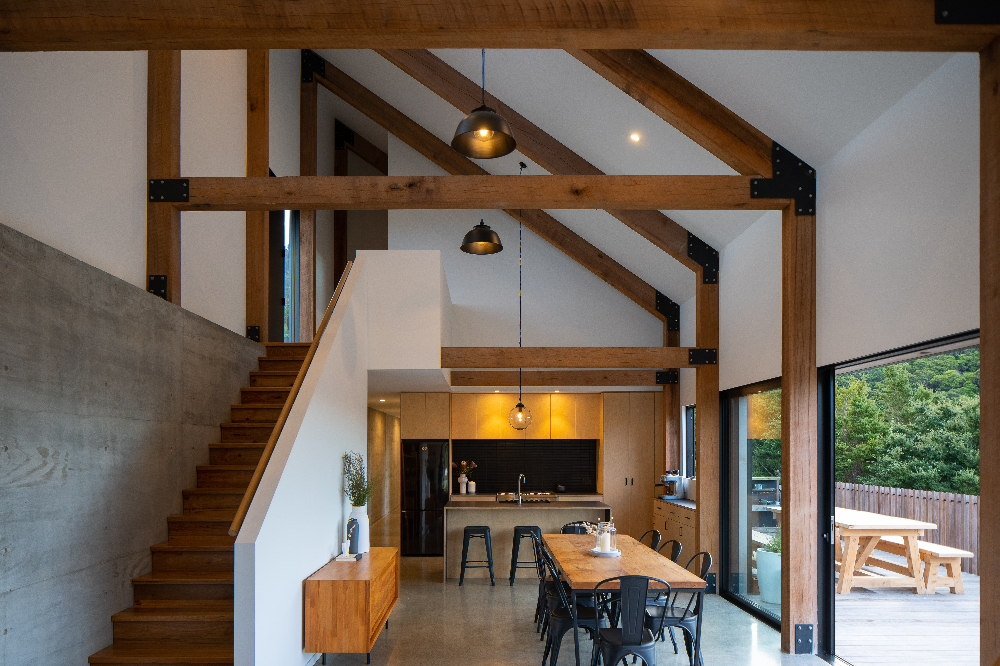
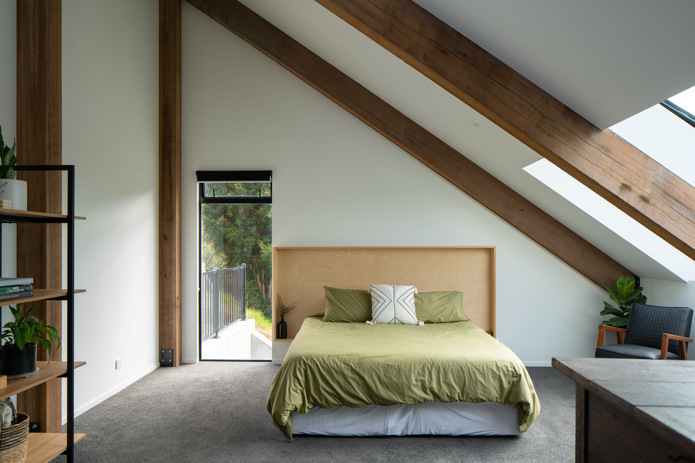
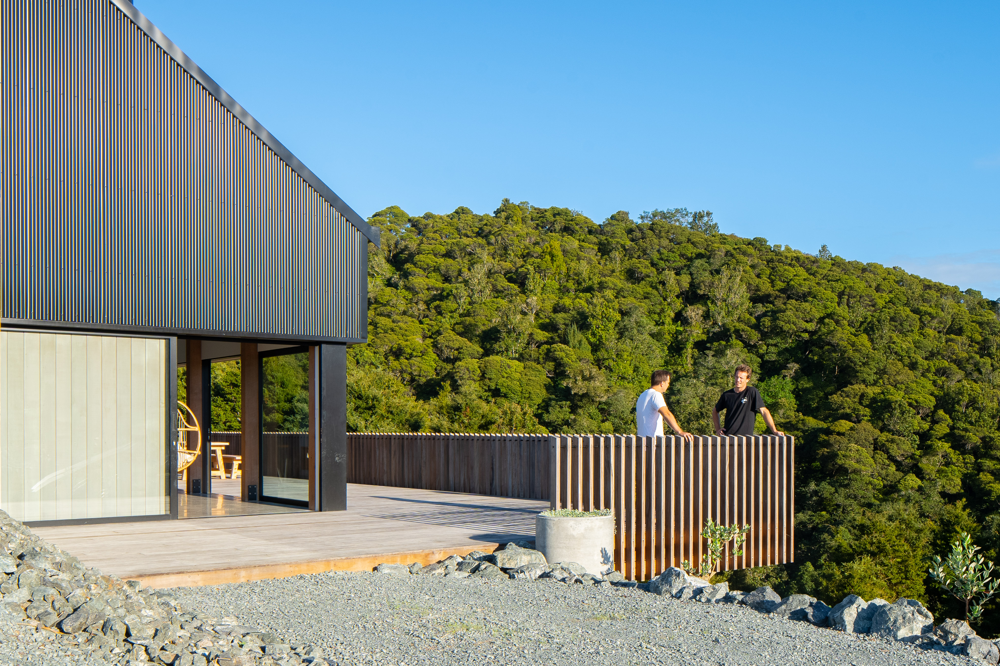
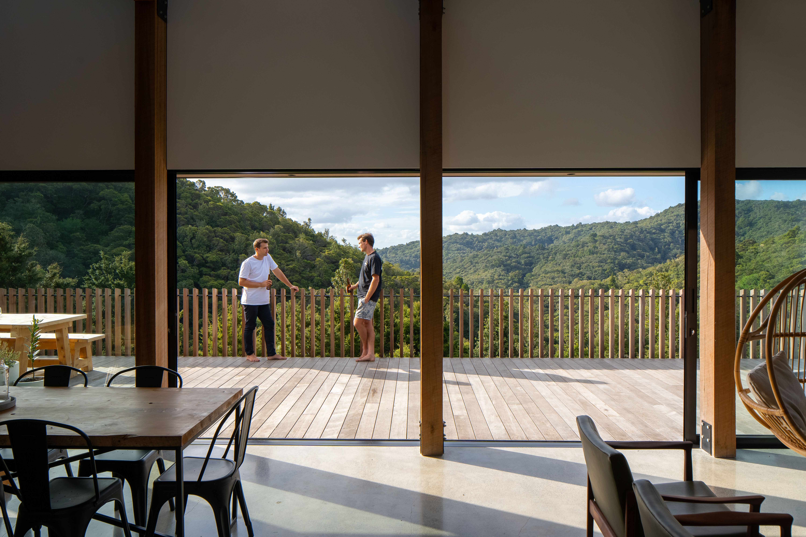

Black Ridge House was a project built from a shared vision — designed in close collaboration with the client, who also built it himself. The brief was deceptively simple: a family home with views, anchored into a very steep Whangarei hillside on a tight budget.
What emerged was something far more considered. The house is anchored back into the hill with cast in-situ concrete walls, letting the structure become part of the landscape rather than sitting on top of it. Abodo timber cladding and dark metal bring warmth and robustness to the exterior, while the interior opens out to the valley views the site demanded.
The project won Home of the Year 2022 — recognition that good design doesn't require an unlimited budget, just clear thinking and materials used with intention.








Start Your Project
Your first consultation is free. Let's talk about your site and what you're imagining.